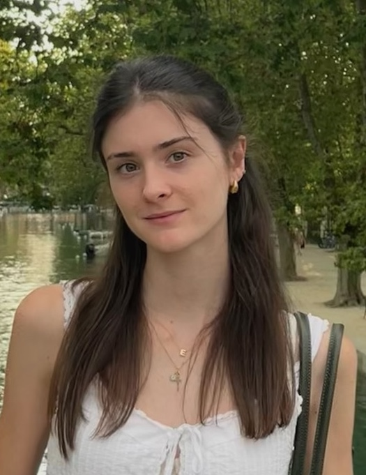
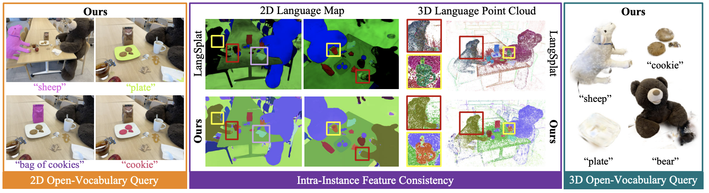
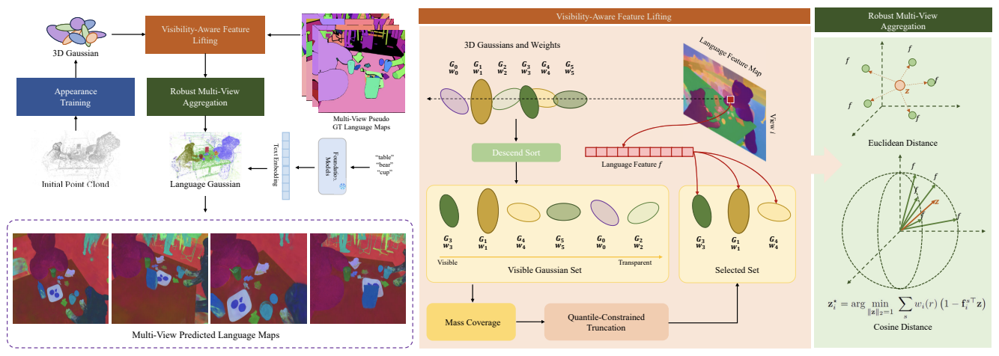

I am a Master’s student at ETH Zurich, majoring in Machine Learning, and a student researcher at the Computer Vision and Geometry (CVG) Lab, where I work on generative models for 3D reconstruction, supervised by Prof. Federico Tombari, Prof. Marc Pollefeys, Dániel Béla Baráth, Michael Niemeyer, and Kunyi Li.
Before that, I was a research intern at TUM’s CAMP Lab (2025, Prof. Federico Tombari), where I carried out my Bachelor’s thesis for my B.Sc. in Artificial Intelligence at UPC, during a one-year exchange; the work was published at 3DV 2026. Earlier, I was a research intern at EPFL’s LTS4 Lab (2024, Prof. Pascal Frossard), working on vision foundation models for medical imaging, and at the Barcelona Supercomputing Center (BSC) (2023–24).
My research interests include generative models, 3D computer vision, 3D reconstruction, and scene understanding.
Feel free to reach out by email!
CV Mail Twitter Scholar Github LinkedIn


@InProceedings{alegret2025gala,
author = {Elena Alegret and Kunyi Li and Sen Wang and Siyun Liang and Michael Niemeyer and Stefano Gasperini and Nassir Navab and Federico Tombari},
title = {GALA: Guided Attention with Language Alignment for Open Vocabulary Gaussian Splatting},
booktitle = {International Conference on 3D Vision (3DV)},
year = {2026},
}
@InProceedings{wang2025visibility,
author = {Sen Wang and Kunyi Li and Siyun Liang and Elena Alegret and Jing Ma and Nassir Navab and Stefano Gasperini},
title = {Visibility-Aware Language Aggregation for Open-Vocabulary Segmentation in 3D Gaussian Splatting},
booktitle = {International Conference on 3D Vision (3DV)},
year = {2026},
}